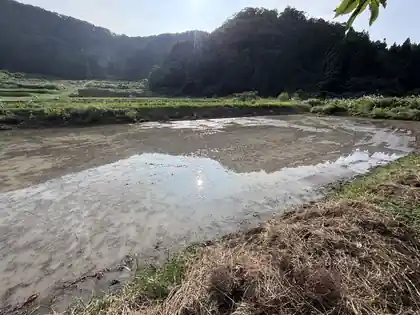

参加費無料で受付。家族や友人と参加する場合も参加者ごとの登録をお願いしていました。
EVENT ARCHIVE · 2026.09.20
泥ん子運動会
2026
珠洲市若山町洲巻の田んぼで開催した「泥ん子運動会2026」の開催前案内を、記録として残しています。現在の参加受付・来場案内ではありません。

HOW TO JOIN / ARCHIVE
開催前に案内していた、
3ステップ。
当時、参加者の方へ案内していた申込み・準備・受付の流れです。
泥だらけになってよい服、着替え、タオル、汚れ物用の袋、飲み物などを準備。
12:00頃から会場付近にスタッフを配置し、安全誘導のもと受付する流れとしていました。
BEFORE YOU COME / ARCHIVE
開催前に案内していた
来場準備。
駐車・トイレ・服装・着替えなど、当時参加者向けに掲載していた情報です。
会場付近で安全誘導
周辺には道幅の狭い場所もあるため、現地ではスタッフの誘導に従って移動するよう案内していました。
小さめの車がおすすめ
大型車も通行可能ですが、軽自動車やコンパクトカーだと安心と案内していました。
会場にトイレはありません
田んぼへ向かう前に、旧上黒丸小学校でトイレを済ませるよう案内していました。
洗いやすい服装で
大人のふくらはぎ程度まで泥に入る想定で、泥だらけになってもよい服装をお願いしていました。
足袋やゴーグルがあると安心
足元が心配な方には農業用足袋、目が心配な方にはゴーグル等を案内していました。
泥を落としてから着替え
会場で車に乗れる程度まで泥を落とし、その後着替える流れとしていました。
PROGRAM / ARCHIVE
開催前に案内していた、
5つの泥競技。
当時掲載していた競技ルールを記録として残しています。実際の実施結果は開催レポートをご覧ください。
親子お宝ハンター＆玉入れ
大人が泥の中からカラーボールを探して子どもへ届け、子どもがカゴへ投げます。
泥んこ綱引き
赤組・白組で泥の中に踏ん張りながら力を合わせる競技。
泥んこバケツリレー
チームで一列になり、水の入った容器を手渡しでつなぎます。
泥んこ手押し相撲
手のひら同士で押し合う1対1勝負。泥に足を取られるのも面白さの一つです。
泥んこドッジボール
柔らかいボールを使用し、全力疾走・滑り込み・飛び込みは行わない安全ルールで実施。
安全に、泥だらけになる。
田んぼならではの足元や暑さ、泥の入り方を考え、服装・水分補給・走り方・競技ルールを細かく決めていました。イベントを楽しむことと、安全に終えることを同じくらい大切にしました。
DAY FLOW / ARCHIVE
開催前に案内していた当日の流れ
実際の一日の様子は開催レポートにまとめています。
会場付近で安全誘導開始。
受付・参加確認。
開会・5つの泥競技。
交流・泥落とし・着替え・閉会。
REBLOOM RENGE CUP
泥ん子運動会の思い出を、
レンゲカップに。
競技のあと、レンゲの種を使った「Re:Bloomレンゲカップ」を作り、自宅へ持ち帰る企画を用意しました。イベントのあとも花が育つ時間まで楽しんでもらうための小さな仕掛けです。

泥ん子運動会2026は終了しました。
実際の写真、参加人数、競技結果、収支まで開催レポートにまとめています。